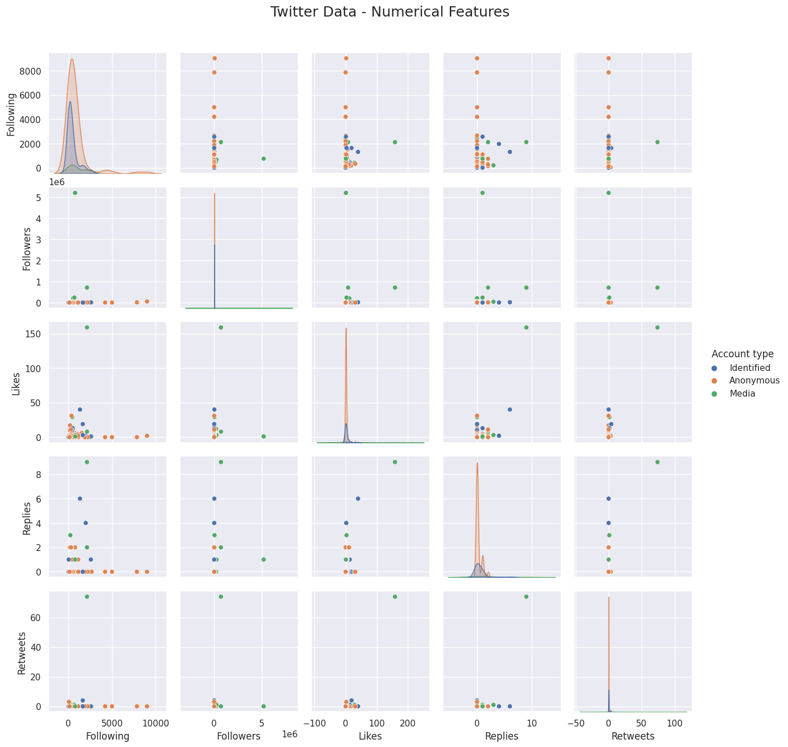

VISUALIZATION
To easily gain insights about the possible trends, correlations, patterns, and relationships that exist between our data variables or attributes, we used the following data visualization techniques:
Scatterplots/Histograms
Using scatterplots, we can identify potential relationships among the different `Account Type` across the following numerical features: `Following`, `Followers`, `Likes`, `Replies`, and `Retweets`.

Heat Map
After that, let us determine any possible correlation among the aforementioned numerical features (`Following`, `Followers`, `Likes`, `Replies`, and `Retweets`) using a heat map.
Line Graphs
Another thing that we are interested to find out is the possible trend in the frequency of tweets. For us to recognize more accurate trends, we will be creating two line plots. The first line plot is for the 14-day binning while the other plot is for the monthly binning.